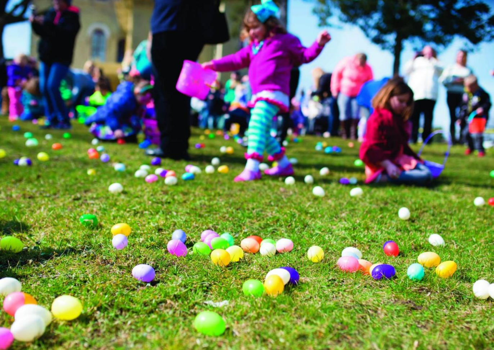
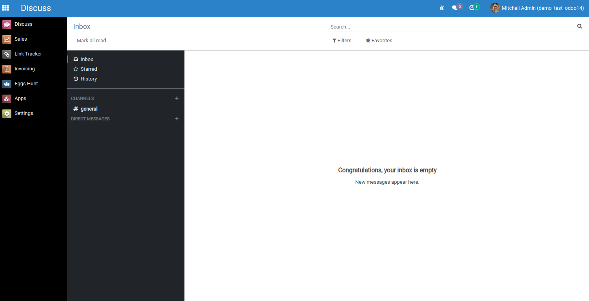
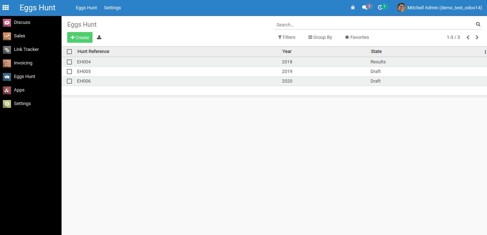
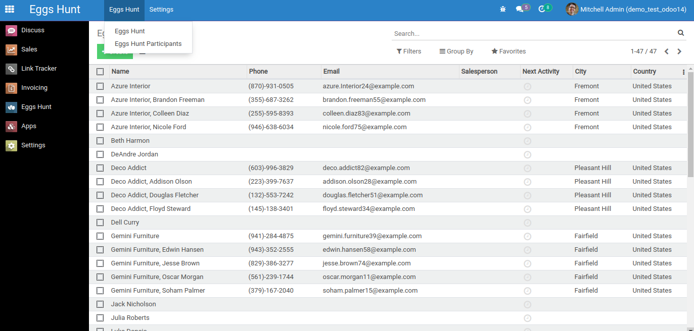
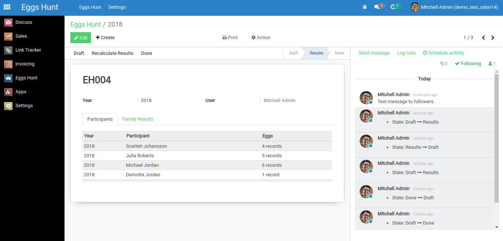
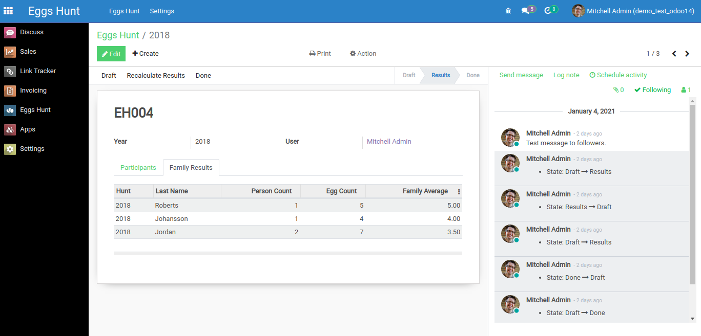
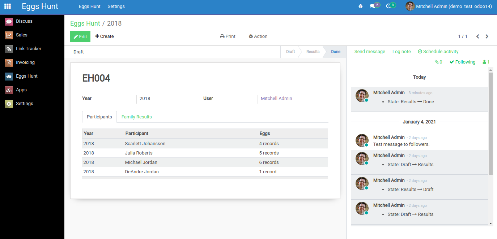

Eggs Hunt
Odoo 14.0 module for calculating Eggs Hunt game results
Game participants compete in collecting eggs of different colors.

Eggs Hunt has an icon in the main menu. Every Hunt Participant can be assigned to a user. Participant can have only one user assigned, and user can be assigned to only one participant. Participant can appear in different Egg Hunts. There are two security groups: Eggs Hunt User group who can work only with hunts where logged in user is assigned to a participant, and Eggs Hunt Manager group where logged in user can read, write, create, and delete all hunt records.

Clicking the icon will take you to the tree view.

Before creating the first hunt, you need to select the sequence for the hunt in Settings/Sequence. Model views are also displayed in Settings menu.
Eggs Hunt menu has items Eggs Hunt and Eggs Hunt Participants. Eggs Hunt Participants shows res_partner model views where participants are stored.

Form view in draft state, lines are entered manually. Color names are not displayed in participants table. The chatter is added to log activity and send messages to followers. There is a recalculate button in Results state in case we need to update the data.

Counted results are displayed in Family Results tab.

When all results are calculated and the game is over, user changes the state to Done.
